What this module does
This module runs the back office of a salon or beauty parlour on top of Odoo: a service catalogue, appointments that move through a real lifecycle from booked to paid, stylist commission calculated automatically on invoice, monthly sales targets, a customer file with real history, stock consumed per service, invoicing and an 80mm thermal receipt. Customers can also book themselves online, on a public page this module adds to your website.
Before you start
You need Odoo 19, Community or Enterprise. Install WT Salon Management from Apps; it pulls in Sales, Accounting, Inventory, Manufacturing, Employees, Portal and Website automatically, so nothing else needs to be installed by hand first.
Install with demo data on and you get a working example salon (Bloom & Blade Salon, Dubai) with eleven services, six stylists across two branches, twenty six customers and a working fortnight of appointments already there, spread across every stage the pipeline knows, exactly what every screenshot in this guide shows. A production database normally installs without demo data, so your own Salon app opens empty and you fill it in using the steps below.
Go to Settings > Users & Companies > Users, open each user and, under Salon Management, assign one of Stylist, Receptionist or Manager. A stylist sees and updates only their own appointments; a receptionist sees and manages every appointment and the service catalogue; a manager has full access, including configuration, commission rules and sales targets.
Setting up your services and prices
Open Salon > Services > Services and press New. Fill in:
- Service Name: what the customer books, for example "Haircut & Styling".
- Category: groups services together, for example Hair Services, Hair Coloring, Skin & Facials.
- Product: the underlying Odoo product used on the sale order and the invoice.
- Price: the price charged, the same field as the product's own sale price.
- Duration (hours): how long the service takes. Twenty minutes is stored as 0.3333, not 0.33, so several short services still add up to a whole number of minutes on the calendar.
- Published on Portal: shows this service on the online booking page (step 15).
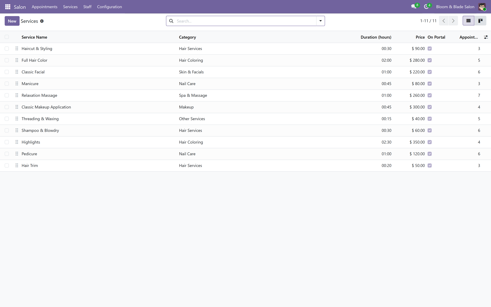
On the Available Stylists tab, add the stylists qualified to perform this service; leave it empty and any stylist can be assigned. On Materials, attach a Bill of Materials if the service consumes stock, and finishing the appointment (step 7) will deduct it from your warehouse for real.
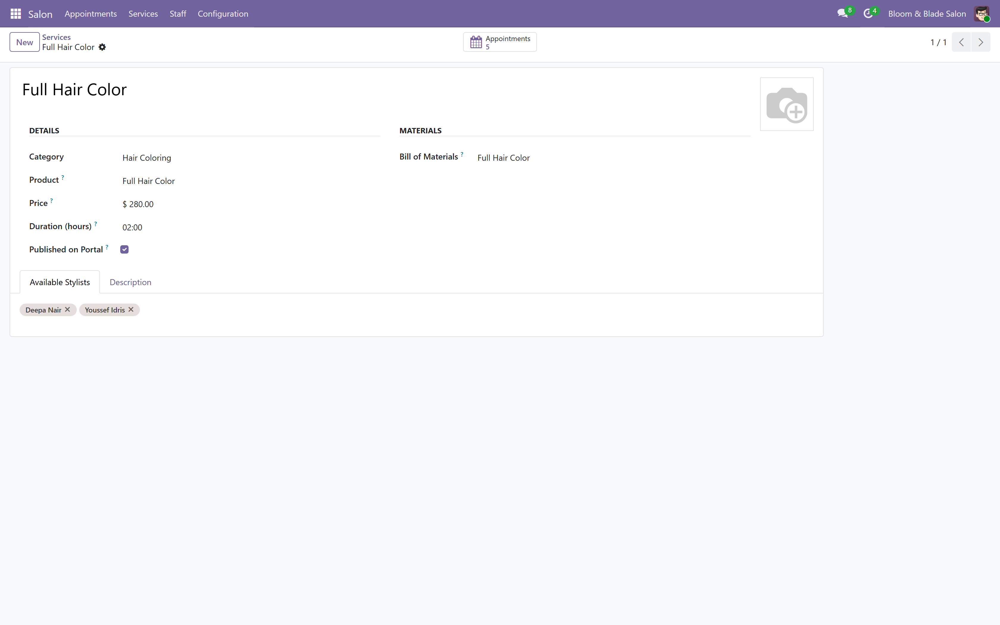
Setting up your stylists
Go to Employees and add one the normal way: name, job title, department and working hours. Nothing about the employee record is specific to this module; the module reads the employee you already have. Back in Services, add the stylist to a service's Available Stylists tab if you want the booking screens to suggest only qualified people for that service (step 2).
A stylist's working hours and time off
Go to Salon > Staff > Breaks & Blocked Times and press New. Fill in a free text Reason for the rota, the Stylist, a Type (Break, Vacation, Training or Other, for the rota only, the booking page refuses the slot whatever the reason), and the From / To period.
The online booking page (step 15) will not offer a slot that falls inside one of these. Two blocks for the same stylist that overlap are refused when you try to save the second one.
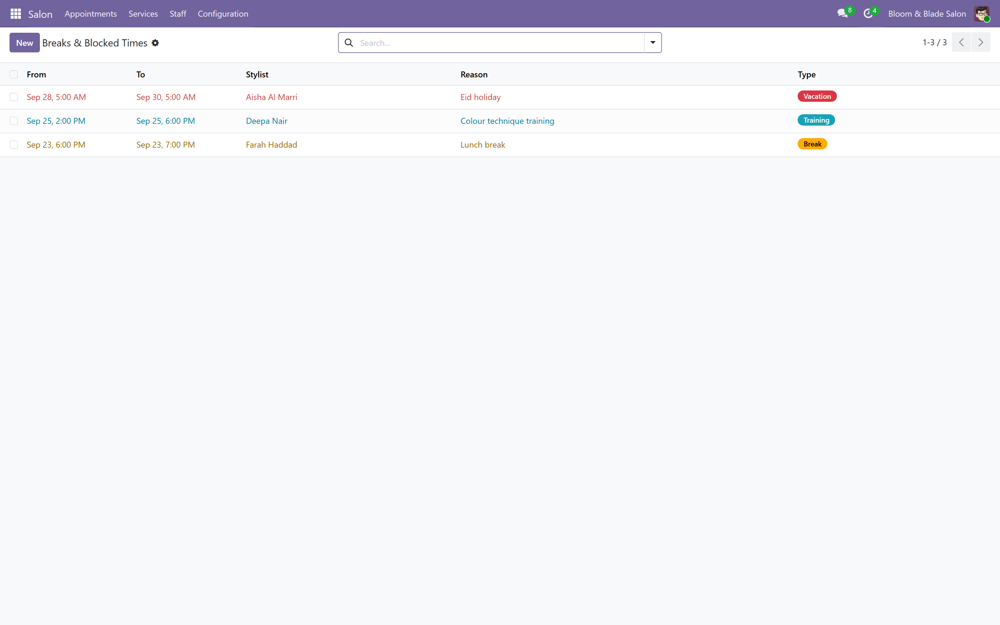
Taking a booking
Go to Salon > Appointments > All Appointments and press New, or use Salon > Appointments > Today to start from today's list. Pick the Customer and the Lead Stylist, set the Appointment Date, and add one line per service on the Services tab; End Time and Duration fill themselves in.
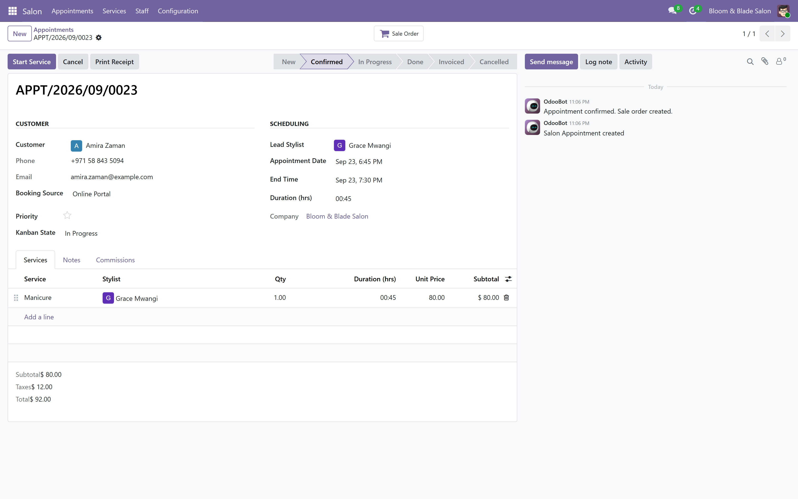
Press Confirm when the booking is settled. This moves the appointment to Confirmed and creates a sale order behind it automatically, so your sales figures pick it up from this point on.
The day, two ways: calendar and kanban
Salon > Appointments > Calendar shows the week, every stylist, colour coded, one row per hour. Click an empty slot to book, click an appointment to open it.

Salon > Appointments > Kanban Board shows the same appointments as cards in columns: New, Confirmed, In Progress, Done, with Invoiced and Cancelled folded on the right. Drag a card between columns, or use the buttons on the form; both move the same Stage field.
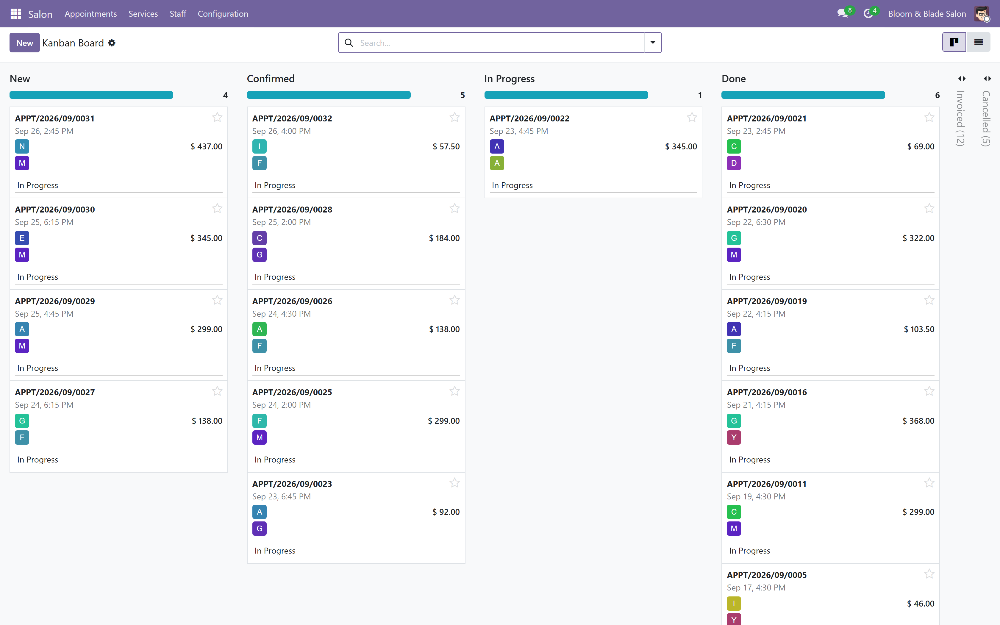
Starting the service and marking it done
When the customer arrives, open the appointment and press Start Service. When the service is finished, press Mark Done. This confirms the sale order if it was still a draft, and for any service line whose service carries a Bill of Materials, deducts the components from your warehouse the same way a real stock transfer would.
Billing the appointment
From a Done appointment, press Invoice for a one click invoice straight from the service lines, or Invoice (Custom) to open a wizard for payment terms or to invoice through the sale order instead. Either way, the appointment moves to Invoiced and commission is calculated at the same time.

The invoice itself is a normal Odoo invoice: discounts and tax are per line, and it posts and gets paid the same way any other invoice does.
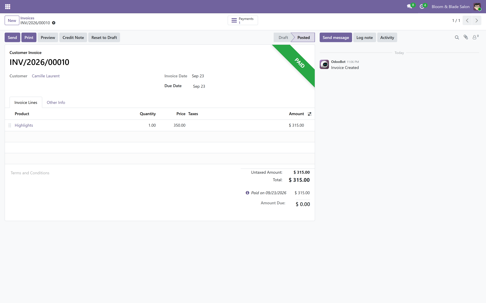
The receipt
From any appointment, press Print Receipt to generate an 80mm thermal receipt: the salon's name and address, the reference, the customer, the stylist, every service with its price, the subtotal, tax and total, and, once invoiced, the invoice number and whether it has been paid.
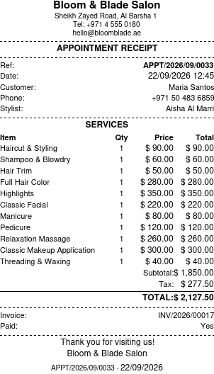
Cancelling a booking
Open the appointment and press Cancel. The appointment moves to Cancelled; if a sale order exists and is still a draft, it is cancelled with it. Press Reset to New from a cancelled appointment if it needs to be reopened.
A no-show
Cancel the appointment the way you would any other cancellation (step 10), then set its Kanban State to Blocked. The Cancelled stage's own kanban legend reads "No show" for a blocked cancellation, so the board already says what happened without a status you have to remember to maintain.
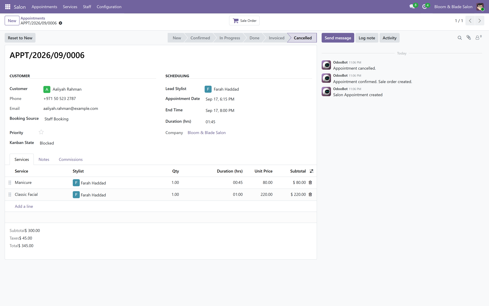
The customer file
Open any customer and click the Salon tab: their Preferred Stylist, a free text Salon Notes field for allergies or preferences, and Last Visit, computed from their most recent closed appointment. The Appointments smart button opens their full history.
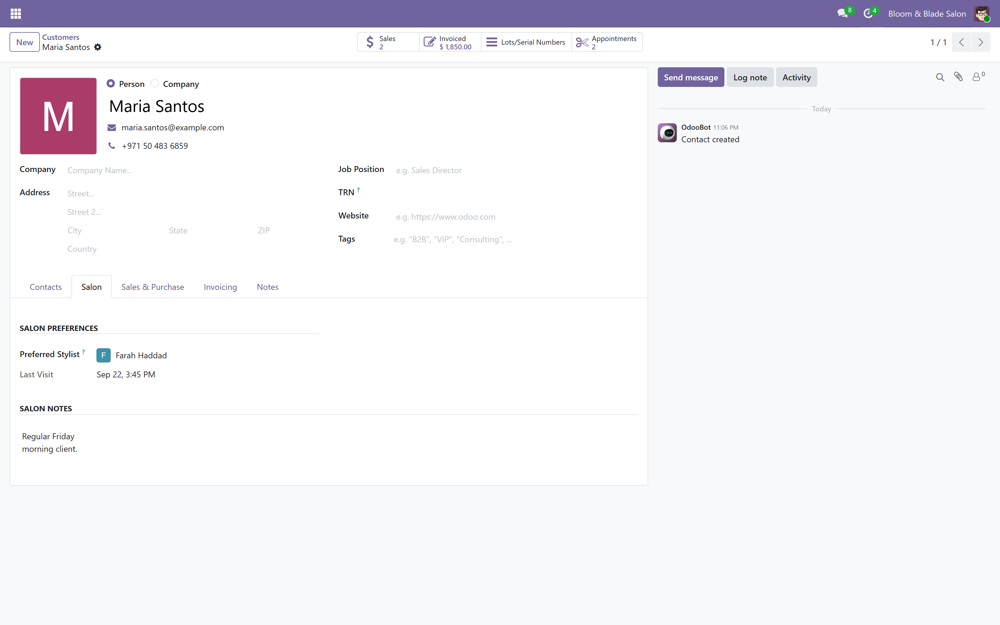
Commission rules and earnings
Go to Salon > Staff > Commission Rules and press New for each stylist. Set Commission Type (Percentage of Service Value or Fixed Amount per Service), the Rate / Amount, and optionally restrict Applicable Services. When two rules could both apply, the one with the lower Sequence wins, so give a service-specific rule a lower sequence than a general one.
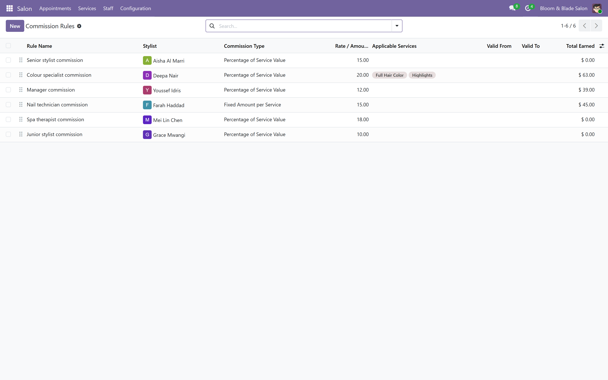
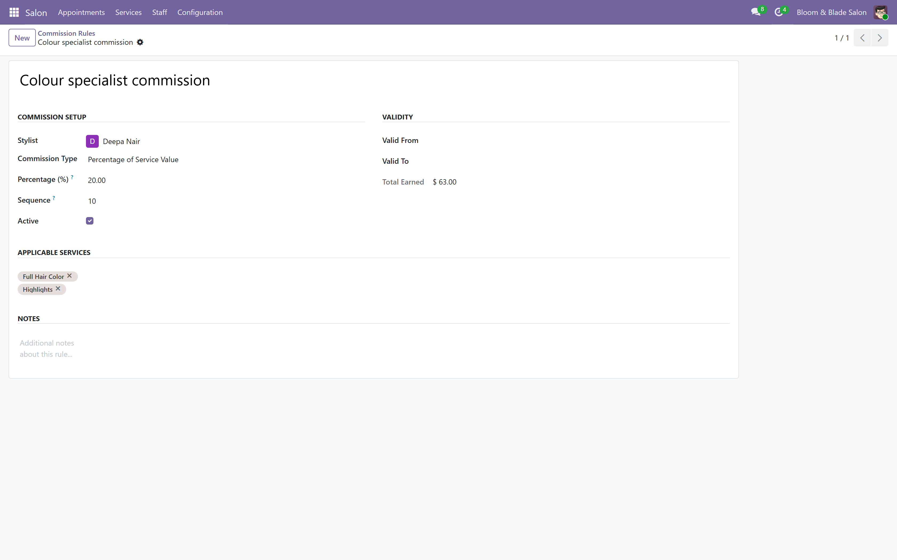
Every commission earned lands in Salon > Staff > Commission Earnings as a Draft line. Press Confirm once checked, then Mark as Paid once the stylist has been paid. A paid line is never reset back to draft.
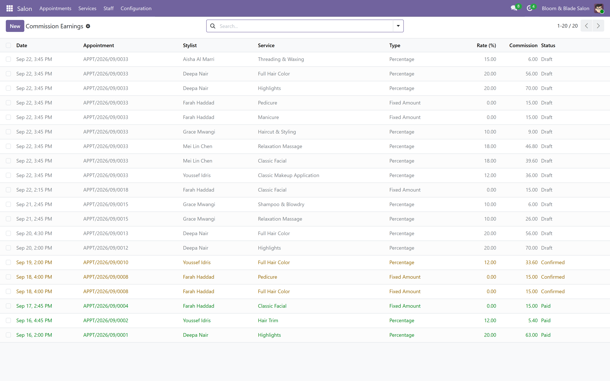
Sales targets
Go to Salon > Staff > Sales Targets and press New. Pick a stylist, a period and a Sales Target amount, and optionally a Bonus Type. Achieved Sales, Remaining, Achievement (%) and Bonus Earned are all computed live from invoiced appointments in the period.
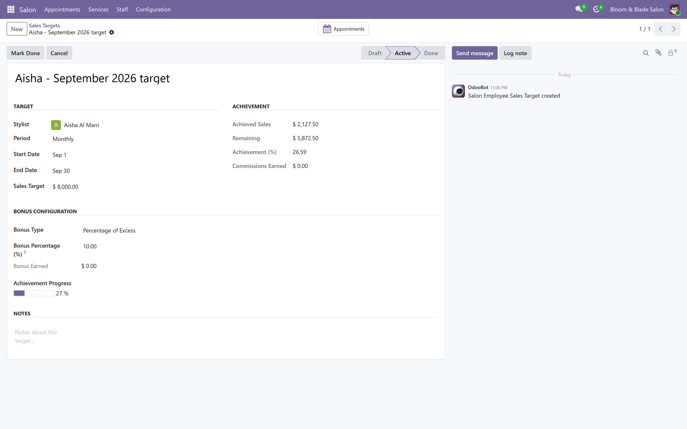
The online booking portal
A public page at /salon on your own website lists every published service, grouped by category, with its price and duration. A customer presses Book, fills in their name, email and phone, ticks one or more services, optionally picks a preferred stylist, and picks a date and time.
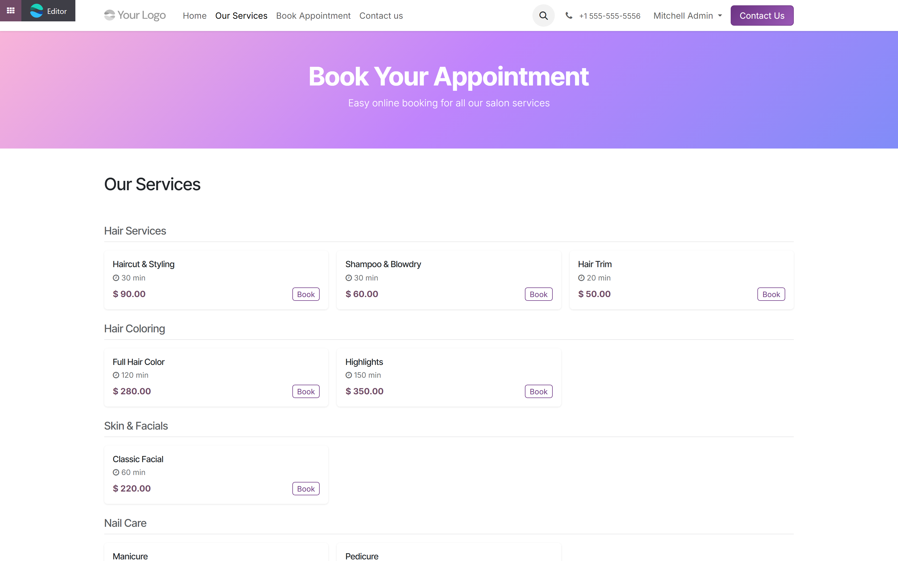
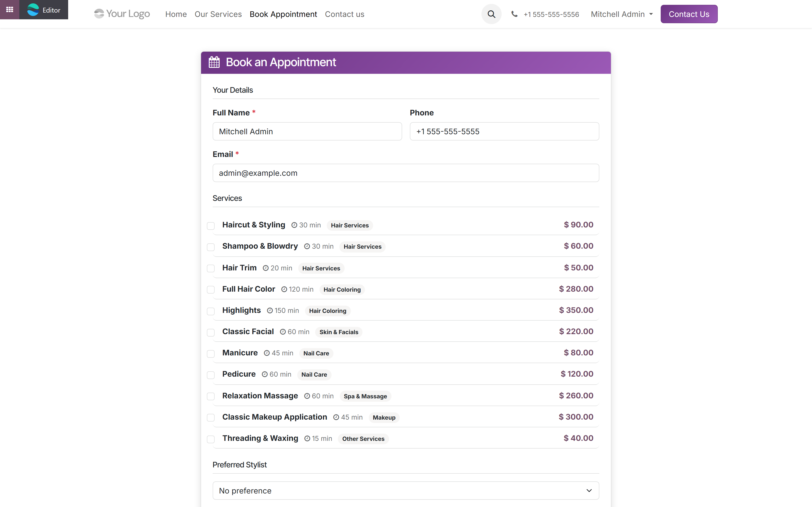
Submitting a booking checks the chosen stylist for an overlapping appointment and for blocked time (step 4) before creating anything, and refuses the slot with a message if either conflicts. A confirmation email is sent automatically.
Settings
Go to Salon > Configuration > Settings. Opening Hour, End Hour and Slot Interval control which time slots the online booking page offers; change any of them and every slot the portal shows respects it immediately.
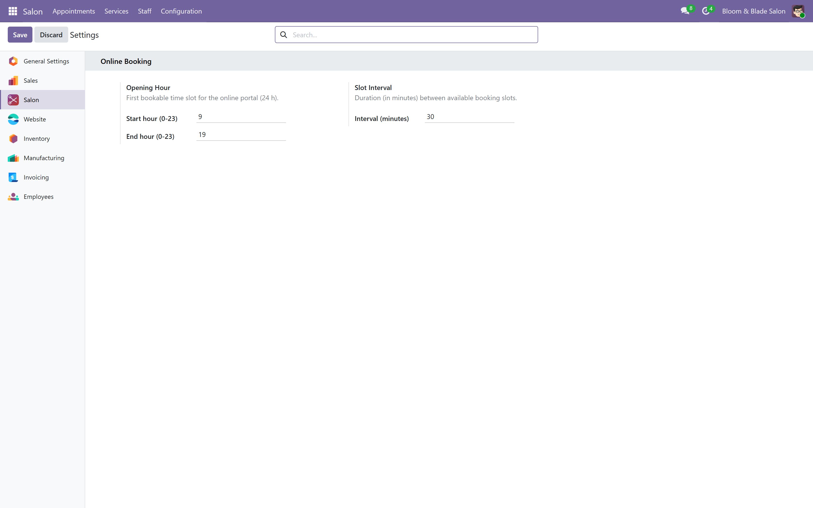
Salon > Configuration > Appointment Stages lets you rename, reorder or add stages to the pipeline itself, each with its own kanban legends and an optional email template sent automatically when an appointment reaches it.
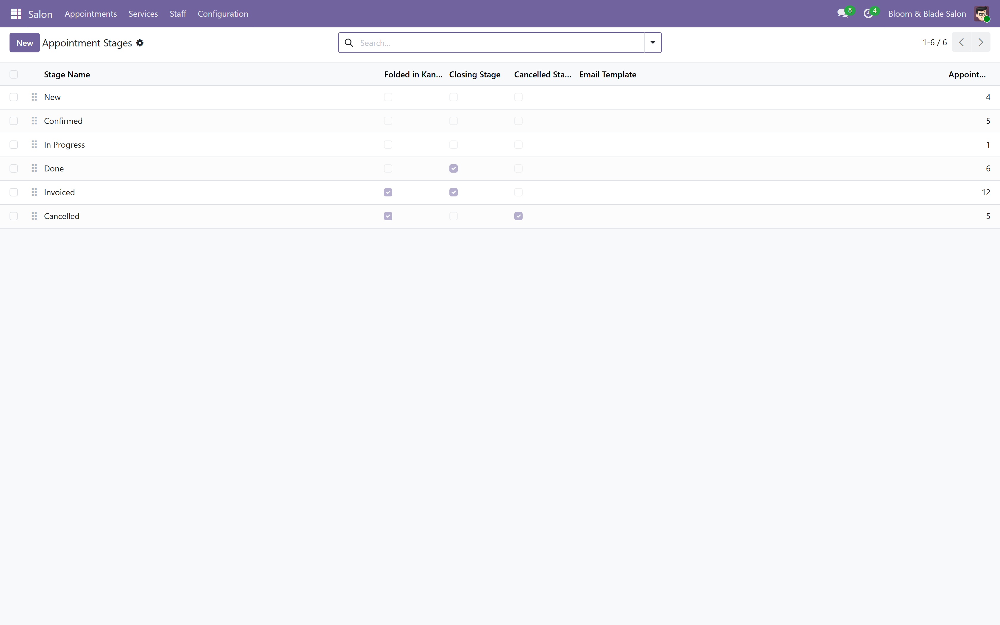
What this module does not do
Said plainly, so nothing here is a surprise after you buy it.
- No loyalty points, packages, memberships or gift cards. That commercial layer is the separate WT Enterprise Salon add-on, sold on top of this module.
- No point of sale till. This is a back office and a booking portal; taking payment at a till is a different product (WT POS Salon or WT Spa and Salon POS).
- No SMS or WhatsApp reminders. The booking confirmation email is the only automated message this module sends.
- No dedicated per-stylist day timeline beyond the calendar and kanban views already shown in step 6.